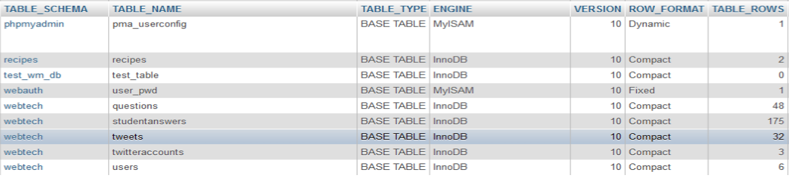
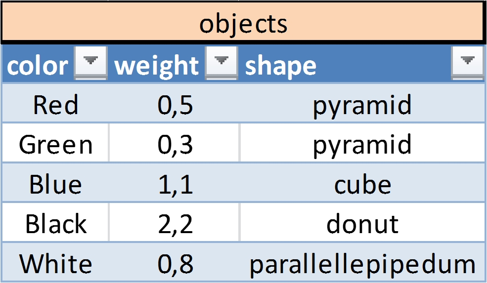
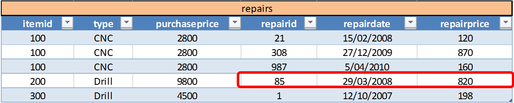
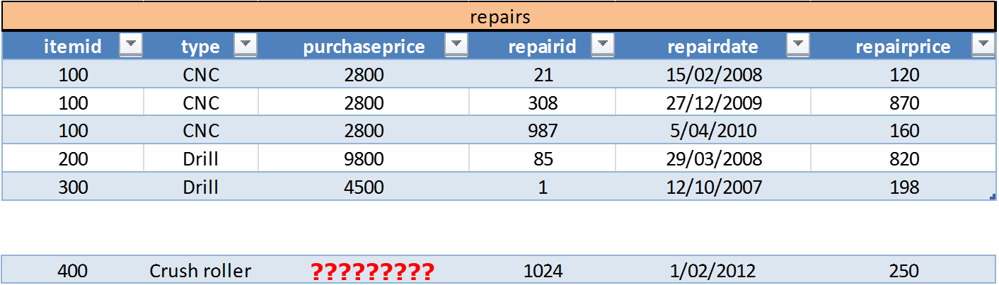
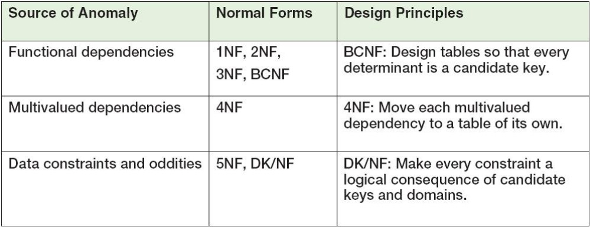
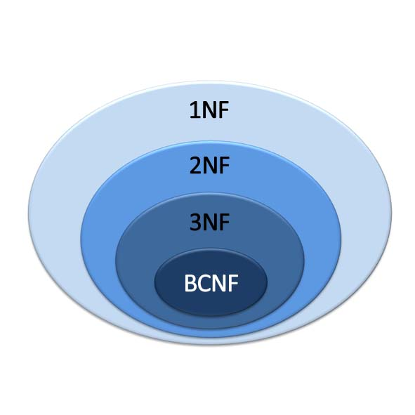
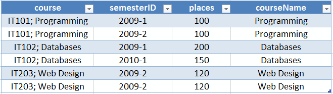
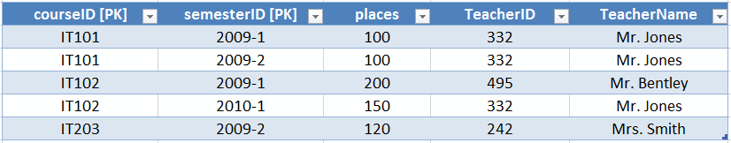
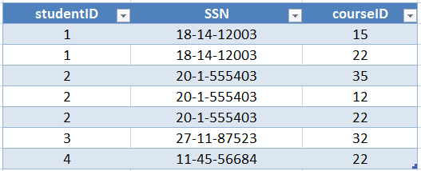

Databases
The Relational Database Management System
The Relational Database
The Relational Database
- The dominant database model is the relational database model most current major DBMS products are based on it.
- It was created by IBM engineer E. F. Codd in 1970.
- It was based on mathematics called relational algebra.
Tasks of a relational DBMS
- Database creation
- Table creation
- Creation of supporting structures (e.g. indexes)
- Supply methods to allow all CRUD operations (create, read, update and delete)
- Maintaining database structures
- Enforce rules (constraints)
- Control concurrency
- Provide security (privilege levels)
- Allow backup and recovery of the database
Contents of a relation database
- Tables with user data
- Metadata
- Indexes
- Stored procedures
- Triggers
- Views
- Security data
- Backup/recovery data
The Characteristics of a Relational Database
- Tables store data in rows and columns, just like a spreadsheet.
- Each row in a table stores data about an instance of the thing of interest, also called an entity.
The Characteristics of a Relational Database
- Relational DBMSs store data about entities in relations, which are a special type of table.
- E.F. Codd used slightly different terms to identify certain elements in a database.
- Relations instead of tables
- Tuples for rows
- Attributes for columns
- Mostly used interchangeably.
Relations
- A relation is a two-dimensional table that has the following characteristics:
- Rows contain data about an entity.
- Columns contain data about attributes of the entity.
- All entries in a column are of the same kind.
- Each column has a unique name.
- Cells of the table hold a single value.
- The order of the columns is unimportant.
- The order of the rows is unimportant.
- No two rows may be identical.
- Relations are tables but not all tables are relations.
- However the terms are used interchangeably.
Tables that are not relations
- Why ?
Tables that are not relations
- Why ?

The Characteristics of a Relational Database
- A relation database may have multiple relations, where each relation stores its own data.
The Characteristics of a Relational Database
- A relational database stores data as well as the associations (relationships) between its relations.

The Characteristics of a Relational Database
- A relational database is a self-describing collection of integrated tables.
- The tables are called integrated because they store data about the relationships between the rows of data.
- A database is called self-describing because it stores a description of itself.
- The self-describing data is called metadata, which is data about data.
The Characteristics of a Relational Database
- Examples of metadata tables
- localhost » information_schema » TABLES

The Characteristics of a Relational Database
- Examples of metadata tables
- localhost » information_schema » COLUMNS
Functional Dependencies
Functional Dependencies
- What do you find strange about these relations ?
Functional Dependencies
- What do you find strange about these relations ?

Functional Dependencies
- A functional dependency occurs when the value of one (set of) attribute(s) determines the value of a second (set of) attribute(s)
Attribute1 => (Attribute2, Attribute3, ...)- The attribute on the left side of the functional dependency is called the determinant.
- This can be red as
Attribute1determines the value ofAttribute2andAttribute3. - (Or:
Attribute2andAttribute3depend on the value ofAttribute1)
Functional Dependencies
- Functional dependencies may be based on equations:
TotalPrice = Quantity x UnitPrice(Quantity, UnitPrice) => TotalPrice- This is however not always the case !
- Composite determinant is a determinant of a functional dependency that consists of more than one attribute.
(Attribute1, Attribute2) => Attribute3
Functional Dependencies
- Attention !
Attribute1 => (Attribute2, Attribute3)
=
Attribute1 => Attribute2
Attribute1 => Attribute3
(Attribute1, Attribute2) => Attribute3
≠
Attribute1 => Attribute3
Attribute2 => Attribute3
Functional Dependencies
- Can you discover the functional dependencies ?
Functional Dependencies
- Can you discover the functional dependencies ?
Functional Dependencies
- Can you discover the functional dependencies ?
Keys
Keys
- A key is a combination of one or more columns that is used to identify rows in a relation.
- A composite key is a key that consists of two or more columns.
- Different keys exist:
- Candidate keys
- Primary keys
- Surrogate keys
- Foreign keys
Unique Determinant Values
- A determinant is unique in a relation if and only if, it determines every other column in the relation.
- A second occurrence of this determinant would otherwise mean a duplicate row in the relation and would result in a violation of the relation rules by Codd.
- We will call this a candidate key later on.
Candidate key
- A candidate key is a key that determines all of the other columns in a relation and thus a unique determinant.
FD: color => (shape, weight)
- So who thinks
coloris a candidate key ?
Candidate key
- You cannot find the determinants of all functional dependencies simply by looking for unique values in one column:
- Data set limitations
- Must be logically a determinant
- The data does not always paint a full picture. In real-life cases it will always be necessary to talk to the people who know the data and have expertise of the relationships between the data.
Candidate key
- A candidate key is a key that determines all of the other columns in a relation and thus a unique determinant.
FD1: (ordernumber, articlenumber) => (price, quantity, extendedprice)
FD2: (quantity, price) => extendedprice
- Why is
FD2: (quantity, price)not a candidate key?
Candidate key
- A candidate key is a key that determines all of the other columns in a relation and thus a unique determinant.
FD1: seller => (quantity, price, total)
FD2: (quantity, price) => total
Primary keys
- A primary key is a candidate key selected as the primary means of identifying rows in a relation.
- There is only one primary key per relation.
- The primary key may be a composite key.
- The ideal primary key is short, numeric, and never changes.
- This is because of performance reasons
Surrogate keys
- A surrogate key is an artificial column added to a relation to serve as a primary key.
- DBMS supplied
- Short, numeric, and never changes - an ideal primary key
- Has artificial values that are meaningless to users
- Normally hidden in forms and reports
Surrogate keys
Surrogate keys

Foreign keys
- A foreign key is the primary key of one relation that is placed in another relation to form an association between the relations.
- A foreign key can be a single column or a composite key.
- The term refers to the fact that the key values are foreign to the relation in which they appear as foreign key values .
Foreign keys

Foreign keys
Overview of the keys
- Functional Dependency:
Determinant => (Attr1, Attr2, ...)- Candidate key: determines all of the other columns in a relation and the key is therefore a unique determinant in the relation.
- Primary key: candidate key selected as the primary means of identifying rows in a relation.
- Surrogate key: an artificial column added to a relation to serve as a primary key.
- Foreign key: the primary key of one relation that is placed in another relation to form a relationship between the relations.
Referential Integrity Constraints
Referential Integrity Constraints
- What happens if we remove a row from the favoritetanks table ?
- This leads to inconsistent data
Referential Integrity Constraints
- A referential integrity constraint is a statement that limits the values of the foreign key to those already existing as primary key values in the corresponding relation.
RIC: WHERE worldoftanksstats.favoritetank_id MUST EXIST in favoritetanks.id
Referential Integrity Constraints
- For the moment these RICs are written in plain English.
- Later we will see how to add these RIC's as constraints to the database.
Modification Anomalies
Modification Anomalies
- What if we wanted to delete the repair of the Drill with repairid 85.

- Then we are actually deleting more than we probable want to. We would lose information about the drill itself.
- This is called a deletion anomaly.
- Can anyone point out the actual cause ?
Modification Anomalies
- What if we wanted to add a repair to the database for a machine that hasn't been repaired before.

- But the repairmen don't know the purchase price of the machine.
- This is called an insertion anomaly.
- Can anyone point out the actual cause ?
Modification Anomalies
- What if we want to change the address of evy ?

- If we forget to change both records, we will end up with inconsistent data.
- This is called an update anomaly.
- Can anyone point out the actual cause ?
Solving Modification Problems
- Most modification problems are solved by breaking an existing table into two or more tables through a process known as normalization.
Solving Modification Problems
- Relations are categorized as a normal form based on which modification anomalies or other problems that they are subject to.

Normal Forms

Normal Forms
- A relation is in 1NF if it is a table that qualifies as a relation.
Normal Forms
- A relation is in 1NF if it is a table that qualifies as a relation.

- This table is not in 1NF (qualify as a relation). Why ?
- Multiple attributes in single cell
- Duplicate rows
Normal Forms
- A relation is in 2NF if it is in 1NF and every non-key attribute is fully dependent on the primary key

FD1: (courseID, semesterID) => places, courseName
FD2: courseID => courseName
- This relation is not in 2NF. Why ?
- courseName depends on part of the PK (courseID) but not the whole key
Normal Forms
- A relation is in 3NF if it is in 2NF and if for each functional dependency
X => Ain R at least one of the following conditions are met:- X is a key or superkey in R
- A is a prime attribute (part of a candidate key) in R

FD1: (courseID, semesterID) => places, TeacherID, TeacherName
FD2: TeacherID => TeacherName
- This relation is not in 3NF. Why ?
- TeacherName depends on TeacherID
Normal Forms
- A relation is in 3NF if it is in 2NF and if for each functional dependency
X => Ain R at least one of the following conditions are met:- X is a key or superkey in R
- A is a prime attribute (part of a candidate key) in R

FD1: (studentID, courseID) => SSN
FD2: (SSN, courseID) => studentID
FD3: studentID => SSN
FD4: SSN => studentID
- This relation is in 3NF because SSN and studentID are both parts of a candidate key
Normal Forms
- A relation R is in BCNF if it is in 3NF and for each functional dependency
X => Ain R, X is a key or superkey in R. In other words, a relation is in BCNF if every determinant is a candidate key.
FD1: (studentID, courseID) => SSN
FD2: (SSN, courseID) => studentID
FD3: studentID => SSN
FD4: SSN => studentID
- This relation is not in BCNF. Why ?
- Because SSN and studentID are not candidate or primary keys
Normal Forms
“The data depends on the key [1NF], the whole key [2NF] and nothing but the key [3NF], so help me Codd.” by Edgar F. Codd